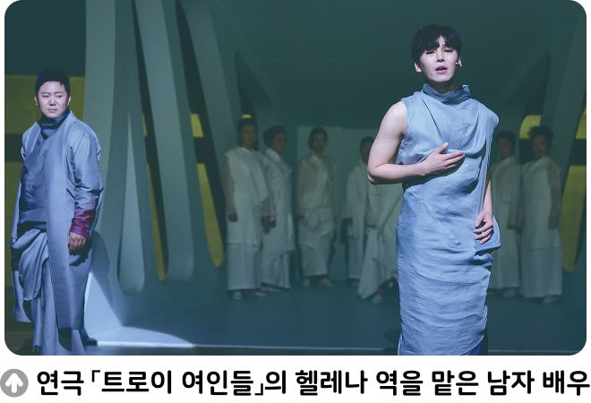

자료 읽기연극계에 불고 있는 ‘성별에서 자유로운 캐스팅’ 열풍

최근 연극계에는 공연의 기획 단계부터 배역에 성별을 정하지 않거나, 성별이 고정된 역할이라도 이를 연기할 수만 있다면 누구나 캐스팅하는 ‘성별에서 자유로운 캐스팅’ 열풍이 불고 있다. 2020년 창극 「트로이의 여인들」에서는 트로이 전쟁의 원인이 된 가장 아름다운 여성 헬레나 역을 남자 배우가 맡았으며, 2023 년 연극 「아마데우스」는 모차르트의 라이벌 살리에리 역으로 여자 배우 를 캐스팅하여 화제를 모았다. 공연 관계자는 이런 열풍이 불고 있는 까닭에 대해서 “이런 캐스팅 방식은 성에 대한 고정 관념을 깨뜨리자는 취지에서 기획되었다. 남자 주인공 역할을 여자 배우가 맡거나, 여자 주인공 역할을 남자 배우가 맡으면서 작품 각색의 영역이 넓어지고, 그에 따른 다양한 변주가 나올 수 있다.”라고 답했다.
- 『중앙일보』, 2023. 2. 19.
● 우리 사회에서 성에 의한 제약이나 차별을 없애려는 움직임을 찾아보고, 이러한 움직임으로 우리 사회가 어떻게 변화할 수 있을지 생각해 보자.
한국의 한 항공사에서 승무원의 복장은 남성용과 여성용의 구별이 없다. 여성 복장은 치마가, 남성 복장은 넥타이가 불편하다는 의견이 많아 이를 해결할 수 있는 복장을 마련했다. 이러한 움직임을 통해 우리 사회는 성 역할 고정 관념 과 성에 대한 편견으로부터 벗어날 수 있다.